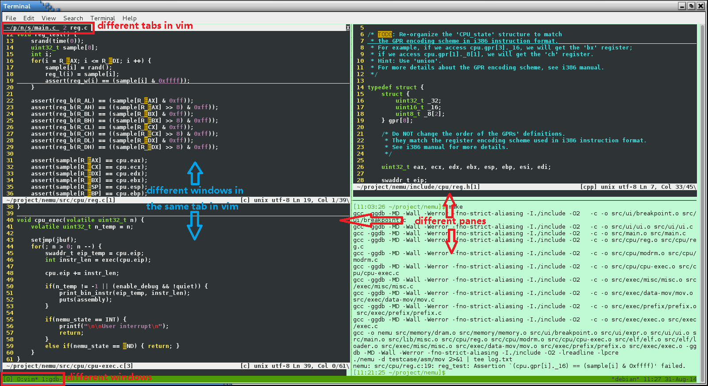

More Exploration
Learning to use basic tools
After installing tools for PAs, it is time to explore GNU/Linux again! Here is a small tutorial for GNU/Linux written by jyy. If you are new to GNU/Linux, read the tutorial carefully, and most important, try every command mentioned in the tutorial. Remember, you can not learn anything by only reading the tutorial. Besides, 鸟哥的Linux私房菜 is a book suitable for freshman in GNU/Linux.
RTFM
The most important command in GNU/Linux is man - the on-line manual pager.
This is because man can tell you how to use other commands.
Here is a small tutorial for man.
Remember, learn to use man, learn to use everything.
Therefore, if you want to know something about GNU/Linux (such as shell commands,
system calls, library functions, device files, configuration files...), RTFM.
为什么要RTFM?
RTFM是STFW的长辈, 在互联网还不是很流行的年代, RTFM是解决问题的一种有效方法. 这是因为手册包含了查找对象的所有信息, 关于查找对象的一切问题都可以在手册中找到答案.
你或许会觉得翻阅手册太麻烦了, 所以可能会在百度上随便搜一篇博客来尝试寻找解决方案. 但是, 你需要明确以下几点:
- 你搜到的博客可能也是转载别人的, 有可能有坑
- 博主只是分享了他的经历, 有些说法也不一定准确
- 搜到了相关内容, 也不一定会有全面的描述
最重要的是, 当你尝试了上述方法而又无法解决问题的时候, 你需要明确"我刚才只是在尝试走捷径, 看来我需要试试RTFM了".
Write a "Hello World" program under GNU/Linux
Write a "Hello World" program, compile it, then run it under GNU/Linux. If you do not know what to do, refer to the GNU/Linux tutorial above.
Write a Makefile to compile the "Hello World" program
Write a Makefile to compile the "Hello World" program above. If you do not know what to do, refer to the GNU/Linux tutorial above.
Now, stop here. Here is a small tutorial for GDB. GDB is the most common used debugger under GNU/Linux. If you have not used a debugger yet (even in Visual Studio), blame the 程序设计基础 course first, then blame yourself, and finally, read the tutorial to learn to use GDB.
Learn to use GDB
Read the GDB tutorial above and use GDB following the tutorial. In PA1, you will be required to implement a simplified version of GDB. If you have not used GDB, you may have no idea to finish PA1.
嘿! 别偷懒啊!
上文让你写个"Hello World"程序, 然后写个Makefile来编译它, 并且看教程学习一下GDB的基本使用呢!
Installing tmux
tmux is a terminal multiplexer.
With it, you can create multiple terminals in a single screen.
It is very convenient when you are working with a high resolution monitor.
To install tmux, just issue the following command:
apt-get install tmux
Now you can run tmux, but let's do some configuration first.
Go back to the home directory:
cd ~
New a file called .tmux.conf:
vim .tmux.conf
Append the following content to the file:
bind-key c new-window -c "#{pane_current_path}"
bind-key % split-window -h -c "#{pane_current_path}"
bind-key '"' split-window -c "#{pane_current_path}"
These three lines of settings make tmux "remember" the current working directory
of the current pane while creating new window/pane.
Maximize the terminal windows size, then use tmux
to create multiple normal-size terminals within single screen.
For example, you may edit different files in different directories simultaneously.
You can edit them in different terminals, compile them or execute other commands in another terminal,
without opening and closing source files back and forth.
You can scroll the content in a tmux terminal up and down.
For how to use tmux, please STFW.
又要没完没了地STFW了?
对.
PA除了让大家巩固ICS理论课的知识之外, 还承担着一个重要的任务: 把大家培养成一个素质合格的CSer. 事实上, 一个素质合格的CSer, 需要具备独立搜索解决方案的能力. 这是IT企业和科研机构对程序员的一个基本要求: 你将来的老板很可能会把一个任务直接丢给你, 如果你一遇到困难就找人帮忙, 老板就会认为你没法创造价值.
PA在尝试让你重视这些业界和学术界都看重的基本要求, 从而让你锻炼这些能力和心态: 遇到问题了, 第一反应不是赶紧找个大神帮忙搞定, 而是"我来试试STFW和RTFM, 看能不能自己解决". 所以PA不是按部就班的中学实验, 不要抱怨讲义没写清楚导致你走了弯路, 我们就是故意的: 我们会尽量控制路不会太弯, 只要你摆正心态, 你是有能力去独立解决这些问题的. 重要的是, 你得接受现实: 你走的弯路, 都在说明你的能力有待提升, 以后少走弯路的唯一方法, 就是你现在认真把路走下去.
提问的智慧
一个素质合格的CSer需要具备的另一个标准是, 懂得如何提问.
相信大家作为CSer, 被问如何修电脑的事情应该不会少. 比如你有一个文科小伙伴, 他QQ跟你说一句"我的电脑出问题了", 让你帮他修. 然后你得问东问西才了解具体的问题, 接着你让他尝试各种方案, 让他给你尝试的反馈. 如果你有10个这样的小伙伴, 相信你肯定受不了了. 这下你多少能体会到助教的心情了吧.
事实上, 如果希望能提高得到回答的概率, 提问者应该学会如何更好地提问. 文科小伙伴确实不是学习计算机专业, 你可以选择原谅他; 但你是CSer, 至少你得在问题中描述具体的现象以及你做过的尝试, 而不是直接丢一句"我的程序挂了", 就等着别人来救场. 如果你不知道如何更好地提问, 请务必阅读提问的智慧这篇文章.
The following picture shows a scene working with multiple terminals within single screen. Is it COOL?

为什么要使用tmux?
这其实是一个"使用正确的工具做事情"的例子.
计算机天生就是为用户服务的, 只要你有任何需求, 你都可以想, "有没有工具能帮我实现?".
我们希望每个终端做不同的事情, 能够在屏幕上一览无余的同时, 还能在终端之间快速切换.
事实上, 通过STFW和RTFM你就可以掌握如何使用一款正确的工具:
你只要在搜索引擎上搜索"Linux 终端 分屏", 就可以搜到tmux这个工具;
然后再搜索"tmux 使用教程", 就可以学习到tmux的基本使用方法;
在终端中输入man tmux, 就可以查阅关于tmux的任何疑问.
当然, 学习不是零成本的. 往届有学长提出一种零学习成本的分屏方式:
打开4个终端, 并将它们分别拖动到屏幕的4个角落,
发现用Alt+Tab快捷键不好选择窗口(因为4个窗口的外貌都差不多), 就使用鼠标点击的方式来切换.
然后形容安装学习tmux是"脱裤子放屁 -- 多此一举".
tmux的初衷就是为用户节省上述的操作成本.
如果你抱着不愿意付出任何学习成本的心态, 就无法享受到工具带来的便利.
Things behind scrolling
You should have used scroll bars in GUI.
You may take this for granted.
So you may consider the original un-scrollable terminal (the one you use when you just log in) the hell.
But think of these: why the original terminal can not be scrolled?
How does tmux make the terminals scrollable?
And last, do you know how to implement a scroll bar?
GUI is not something mysterious. Remember, behind every elements in GUI, there is a story about it. Learn the story, and you will learn a lot. You may say "I just use GUI, and it is unnecessary to learn the story." Yes, you are right. The appearance of GUI is to hide the story for users. But almost everyone uses GUI in the world, and that is why you can not tell the difference between you and them.